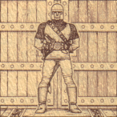

<< Previous Chapter | Table of Contents | Appendix A >>
CHAPTER X
MODERN CIVILIZATION
AND OUR UNIVERSE

We have just emerged from the darkest period in recorded history. With the vanquishing of the Triad of Evil. We need no longer anxiously watch our backs for fear that evil will fall upon us in the first unguarded moment. The stability achieved by the New Age seems to herald a Golden Age of Peace and Prosperity.
What kind of people will inherit this New Age? Surely our destiny is not to perpetually fight as warring tribes throughout all time. Is there not a higher calling -- one worthy of our efforts and capabilities?
If one accepts that the next area of human growth should not be fostered through aggressive territorial expansion, then a possible answer emerges -- We must turn inward. Of late, a small group of inquisitive philosophers at the Lycaeum have been asking such questions of each other. While their musings seem quite radical and new, they are worthy of consideration:
Is living a life of virtue an essential element of civilization, or can society survive the test of time without such principles?
How might we ensure the long-term continuation of our new-found peace? What systems of laws and ethics will ensure the continued happiness of all our people?
Why doth Evil still stalk the world and can it ever be truly vanquished?
If the public set of ethics which evolved from the days of primordial survival is impure, how can We achieve a clean foundation upon which to build a life of virtue?
Given the premise that to understand purity, one must strive to be so, how does one strive for that which cannot be understand?
If our true purpose here is to achieve a balance with our surroundings -- as is suggested in the ancient scrolls of the Library -- how can We face Nature without first facing ourselves?
Meditation seems to hold the key to perspective. In the transcendental state one is freed from the shackles of modern living. The whole of the universe resonates with thee, and thou dost feel for once as if thou dost belong to a greater whole. Yet all too soon the meditation ends, and thou dost return from this brief glimpse of the sublime to the daily need for survival.
It is time for all to put aside their warlike ways and begin fighting the evil that lurks with themselves. It is far too easy to sit and espouse the path of Virtue, yet never set foot upon it. The ancient rule of treating others as thou wouldst be treated thyself takes on new meaning when put in the context of universal harmony. We must become living examples of our beliefs!
How does one begin to first walk along this new way? Do road markers exist if we but open our eyes to see them?
To be at peace in all areas is a state of mind only achieved by an Avatar. Is such a state attainable by any human, fallible as we all are? The true answer can only be found by those who quest forth in search of it -- for who can see the end of the Path before beginning the journey? Yet it is also written that for each person the Path is different. Perhaps the seeker of wisdom and enlightenment should begin by visiting Lord British, for his knowledge of the ways of the land is great. Conversing with him may help one to determine where lie the centres of the Eight Virtues of the Avatar.
Many philosophers hold the opinion that the Path is in reality but a series of separate small Paths. Each minor path leads to the fulfillment of an aspect of ourselves. Treading one of these minor paths may be construed as a life's goal, and many people have debated which is the most advantageous to follow.
Yet is not the whole much greater than the sum of its parts? Take up the challenge and tread not one but all of the minor paths in thy search for enlightenment and perfection. Perhaps only then will thou find the beginnings of the great Path. The Quest of the Avatar awaits. It is not the Heritage that thou does seek, 'tis thy Destiny!

<< Previous Chapter | Table of Contents | Appendix A >>
|